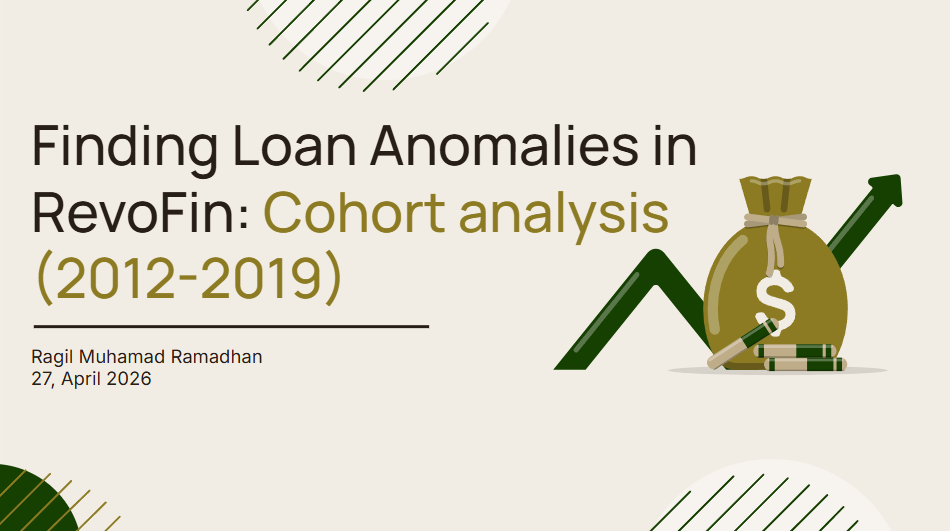
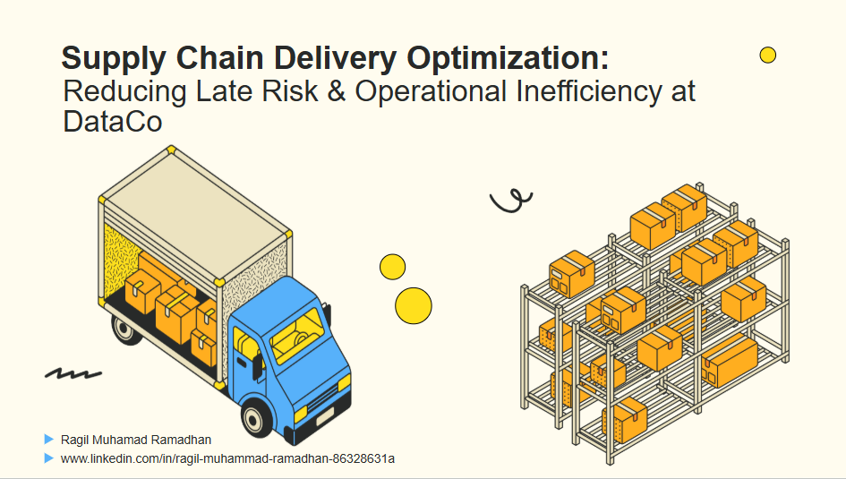
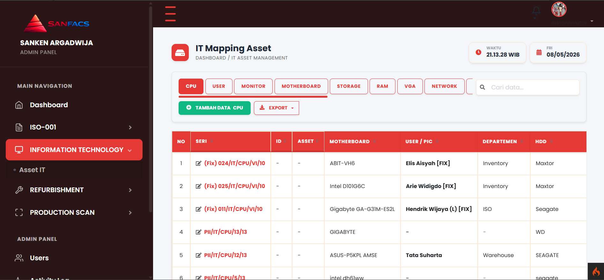
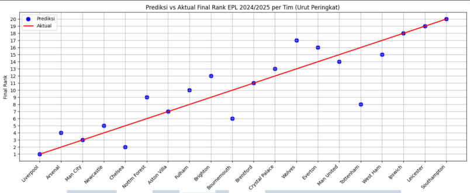

I am a detail-oriented and quick-learning Data Analyst holding a Bachelor of Computer Science from Multimedia Nusantara University, with experience in leveraging data to make better decisions. At Bappeda Kabupaten Pohuwato, I focused on data modeling and API documentation development, which strengthened my ability to understand and analyze data in a broader context. I deepened my understanding of data analysis through the Full-stack Data Analytics program at RevoU. After completing the Data Analytics program at RevoU, I gained technical skills in SQL, Python, and Tableau, where I successfully applied this knowledge in real-world projects that drove improved data analysis. I'm confident that with these skills, I can make a positive contribution to achieving team success and broader business goals.
Education
-
Universitas Multimedia Nusantara (August 2021 – August 2025)
Bachelor of Computer Science | GPA: 3.39/4.00
English Premier League Final Results Prediction Using LSTM Algorithm
-
RevoU (October 2025 – February 2026)
Full-stack Data Analytics
Perform end to end data analysis using SQL, Spreadsheet, Python, and visualization tools from various industries, applying analytical frameworks from data cleaning to generating business recommendations.
-
Celerates (February 2024 – June 2026)
Data Scientist Basic
Learn the workflow of a data scientist and basic technical skills in the form of ETL with Pentaho, statistical data processing using Python, machine learning modeling to help the analysis process, and visualization with Tableau to facilitate communication of the insights obtained.
Technical Skills
- Languages: Python, SQL, PHP
- Tools: Tableau, Power BI, Looker Studio
- Frameworks: CodeIgniter 4, Scikit-learn
- Specialization: Data Modeling, NLP, RAG, Agentic AI
Featured Projects

Finding Loan Anomalies in RevoFin: Cohort Analysis
Analisis mendalam pada portofolio pinjaman (2012-2019) menggunakan Python untuk mengidentifikasi anomali risiko. Berhasil merumuskan kebijakan underwriting baru berbasis data untuk menjaga metrik TKB30 tetap stabil di level >99,9%.

Supply Chain Delivery Optimization
Mengoptimalkan keterlambatan pengiriman yang mengancam revenue sebesar $3,2 juta. Menggunakan Python untuk EDA dan Tableau untuk visualisasi interaktif guna memitigasi risiko operasional tanpa biaya tambahan.

IT Asset Management & Refurbishment System
Membangun sistem backend menggunakan CodeIgniter 4 untuk otomatisasi alur kerja inventaris dan pelacakan komponen aset IT di lingkungan korporat.

EPL Final Standings Prediction (LSTM)
Proyek riset menggunakan algoritma Long Short-Term Memory (LSTM) untuk memprediksi hasil klasemen akhir Premier League berdasarkan data historis performa tim.
Get In Touch
Saya terbuka untuk diskusi mengenai peluang kolaborasi di bidang Data Analytics, Machine Learning, maupun Web Development.
{kind=link}
{kind=link}
{kind=link}
{kind=link}
{kind=link}